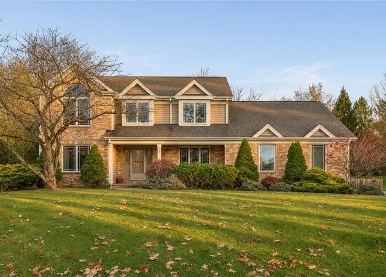

Friday, November 6, 2026
One new home this time, a near-miss just over budget. Nothing else changed. Drive times are in minutes to Woodbine (Cranberry), then Foxwood (Mars), then Broadway (Wexford). They assume no traffic. Rush hour will probably add 10-25%.

01. 117 Pinehurst Dr, Cranberry Twp (Pinehurst), Butler County - $599,900 [NEAR-MISS]
New listing, on the market 1 day.
4 bed / 3.5 bath, 2,845 sq ft, built 1992, 0.47 ac flat, private back yard with mature landscaping, a wooded backdrop and a big rear patio
Unfinished basement (interior entry, described as having unlimited potential) and an oversized attached 2+ car garage. HOA is $320 a year.
Roughly $50k over budget and built just before 1995, but the home looks well kept, with a stone gas fireplace, office, sunroom and hardwood floors. The condition is from the listing text; I have not seen it in person.
Drive: 12 / 13 / 16. Close to all three, about 12-16 min.
No other changes. 707 Dunbury Ct is still pending, and 211 Katherine Dr and 130 Woodbine Dr are still contingent. Every other home from earlier updates is still active at its last price.
The only new listings were this one and builder floor plans that were already on the list.
Prepared by your PA house search assistant
Photos are from the public Redfin listings.